제1장 「야릴로-VI」
설원 · 벨로보그 상층 · 하층 구역 · 큰 광산구역 · 리벳 타운 · 극한의 땅
하얀 행성
행성 궤도 · 설원스텔라론이 막아선 궤도, 눈보라뿐인 벌판, 그리고 눈더미 속에 숨어 있던 남자.
「극한의 대모험」
멈춘 궤도
은하열차 · 행성 궤도
가 하얀 행성의 궤도에서 멈춘다. 원인은 이다. 스텔라론이 궤도에 영향을 주는 동안 열차의 전진 노선이 막히고, 여행을 이어가려면 그 정체를 풀어야 한다. 이 행성의 이름은 다.
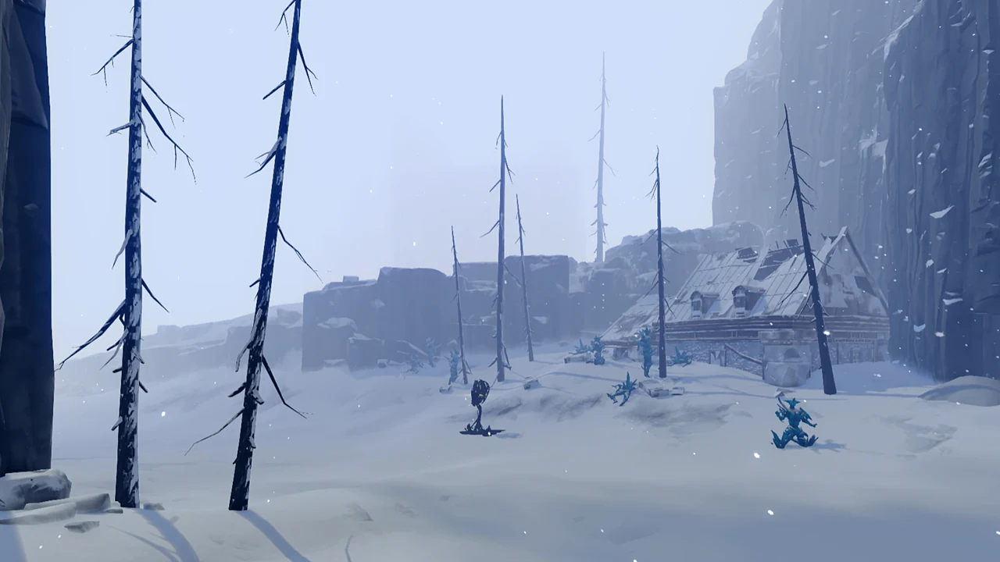
내릴 사람은 셋이다. 와 , 그리고 . 는 열차를 지키고, 세 사람이 행성 표면에서 스텔라론의 흔적을 찾아오는 것이 이번 몫이다. 개척은 탐사와 이해, 건립과 연결로 이루어진다는 말이 이번 여정의 순서를 정해 준다.
스텔라론이 만든 재앙은 행성마다 다르지만, 그게 심어진 세계엔 모두 열계가 생겨났죠
먼저 알아야 할 것은 이 행성이 어떤 곳인가다. 스텔라론이 심어진 세계에는 예외 없이 가 생겨났고, 야릴로-VI에도 그 침식이 남아 있다. 세 사람은 방한 장비를 갖추고 궤도에서 내려간다.
히메코가 단항을 찾아 대화를 나눠 보라고 권한 뒤, 세 사람은 열차의 정박구에서 내린다. 웰트와 히메코는 열차에 남아 다음 좌표를 계산한다.
우리가 협력을 원하는 건 결국 모두의 이익이 일치하기 때문이지——「스텔라론」을 봉인하지 않으면 우리도 이 행성을 떠날 수 없거든
「극한의 대모험」
눈더미 속의 남자
설원 지대
행성 표면에는 서리 바람과 끝없는 설원뿐이다. 문명의 흔적을 찾아 걷던 일행은 눈더미 하나가 꿈틀거리는 것을 발견한다. 이 세계에서 움직이는 눈더미보다 흥미로운 것은 없다는 판단으로 눈더미를 파헤치고, 그 안에서 부들부들 떠는 남자를 꺼낸다.
무슨 소리! 나 삼포는 항상 친구들을 신경 쓴다고, 이들이 날 도왔으니 은혜는 갚아야지
남자는 자신을 라고 소개한다. 이 설원에서 잠을 자려는 사람은 없으니, 그가 피하는 것은 일행이 아니라 다른 누군가다. 사정을 들은 삼포는 표면에 남은 유일한 인류 거주지, 곧 로 가는 길을 안내하겠다고 나선다.
이동 중에 삼포는 도시의 사정을 조금씩 흘린다. 벨로보그는 한파 속에서 버틴 도시이고, 도시의 질서는 와 수호자가 지킨다. 의 단서도 그 안에 있다는 것이 삼포의 장담이다.
삼포는 눈더미에 숨은 이유를 끝까지 말하지 않는다. 다만 도시로 가는 길에 철위대의 순찰을 피하는 요령을 알고 있고, 그 요령이 일행을 성문 앞까지 데려간다.
영원한 겨울의 도시
벨로보그 상층 · 괴테 호텔수호자의 거처로 불려 간 손님, 봉인을 제안하는 자리, 그리고 밤을 깨우는 군화 소리.
「영원한 겨울 성의 밤」
철위대의 방위관
설원 입구 · 클리포트 보루
도시로 이어지는 길에서 일행은 철위대의 방위관 와 마주친다. 그가 본 것은 수상한 눈더미와 낯선 옷차림이고, 그가 들은 것은 의 말이다. 게파드는 일행을 반역을 모의하는 침입자로 지목하고 무기를 겨눈다.
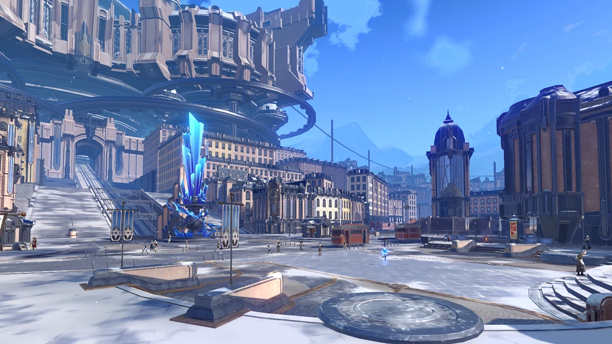
대화로 오해가 풀린다. 천외에서 왔다는 사실을 확인한 게파드는 일행을 수호자 의 거처로 호송하겠다고 약속한다. 이동하는 동안 그는 의 역사를 인용해 들려준다. 700년 전 천외의 괴물이 행성을 불태웠고, 생과 사가 갈리는 순간에 한파가 닥쳐 침입한 군단이 눈보라에 묻혔으며, 살아남은 것은 이 도시 하나였다.
700년 전, 천외의 괴물이 행성을 불태웠다. 대지는 초토화됐으며 사방이 타오르는 용암의 불길과 뒤끓는 검은 연기로 가득했다
도시를 지은 사람들은 다. 그들이 를 따르며 세운 도시가 벨로보그이고, 도시의 심장에는 수호자의 거처인 클리포트 보루가 있다. 철위대가 지키는 것은 성벽과 질서이고, 그 질서의 바깥에는 의 침식이 남아 있다. 도시의 종교와 역사는 하나의 이름에서 시작됐다.
게파드가 인용한 문장은 마치 암송처럼 이어지고, 은 그것이 어떤 서적의 구절임을 알아챈다. 도시의 군인에게 역사가 곧 규율이라는 사실이 여기서 드러난다.
결연한 「축성가」들은 이 도시를 지었고 「보존」의 클리포트 보우 아래 벨로보그는 광풍과 폭설 속에서도 영원한 따뜻함을 누릴 수 있게 됐다
「영원한 겨울 성의 밤」
수호자의 계산
클리포트 보루
수호자 는 침입자를 심문하지 않고 손님으로 맞는다. 그녀는 천외에서 왔다는 말을 이미 알고 있고, 일행이 가져온 이야기보다 일행이 쓸모 있는지를 먼저 저울질한다. 일행은 의 재앙이 행성마다 다른 모습으로 나타난다는 점과, 봉인하지 않으면 열차도 이 행성도 떠날 수 없다는 점을 제시한다.
쿠쿠리아의 관심은 봉인 자체보다 그 뒤에 있다. 그녀는 스텔라론과 관련된 기록을 조사할 시간이 필요하다며 일행을 귀빈으로 예우하고, 상층의 고급 호텔에 묵게 한다. 대접은 후하지만 결정은 미뤄진다.
상층에서의 하루는 도시의 겉모습을 보여 준다. 시민들은 수호자와 의 이야기를 역사로 배우고, 철위대는 거리를 지키고, 가 번진 골목은 봉쇄되어 있다. 저녁이 되자 일행은 호텔로 돌아가 하루를 정리한다.
환영한다. 한파 밖에서 온… 아니, 천외에서 온 손님, 맞지?
쿠쿠리아가 일행에게 요구한 것은 협조가 아니라 침묵이다. 심문도 구금도 없이 호텔로 보낸 것은 그녀가 이미 결정을 내렸다는 뜻이고, 는 그 결정을 사령관으로서 집행한다.
나도 「스텔라론」과 관련 있을 만한 모든 기록을 조사하려면 시간이 필요해…. 멀리 안 나가지
「영원한 겨울 성의 밤」
군화 소리
괴테 호텔 · 거리
첫날 밤은 편하지 않다. 비몽사몽 사이에 군화 소리와 급한 노크가 들리고, 호텔 밖에는 철위대가 포위를 치고 있다. 우호적으로 보이던 수호자의 태도가 하룻밤 만에 바뀐 이유는 설명되지 않는다.
일행을 이끈 것은 랜도다. 그녀는 통솔자 대행의 직함으로 침입자 체포를 명령하고, 일행은 항복 대신 도주를 택한다. 거리마다 철위대가 붙고, 도시의 성문은 닫혀 있다.
용의자, 설치지 말고 브로냐 사령관님께 가봐!
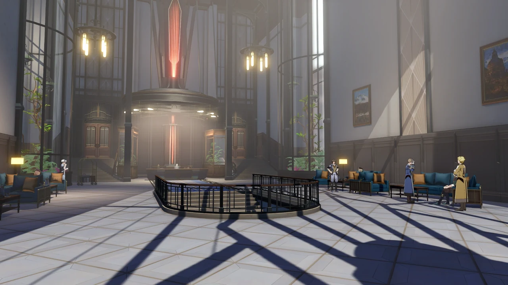
탈출로는 다. 열계는 위험하지만 철위대의 손이 닿지 않고, 하층 구역과 이어져 있다. 세 사람은 열계로 뛰어들어 문을 열고 몬스터를 지나 반대편 출구를 찾는다.
브로냐가 체포를 명령한 이유는 일행의 정체가 아니라 도시의 질서다. 밤새 거리에 철위대가 배치된 것은 수호자가 이 손님을 도시 밖으로 내보낼 준비를 마쳤다는 뜻이다.
뛰어봤자 벼룩
열계 · 하층 구역 · 볼더 타운추격을 피해 들어간 열계의 출구는 하층이었고, 그곳에서 도시의 다른 얼굴이 시작된다.
「뛰어봤자 벼룩」
열계의 출구
열계 · 하층 구역
안은 상층의 거리와 다른 규칙으로 움직인다. 철문이 길을 막고, 문 주변에는 몬스터가 어슬렁거리며, 공간 자체가 상층과 이어져 있지 않다. 일행은 문을 열고 몬스터를 지나며 출구를 찾는다.
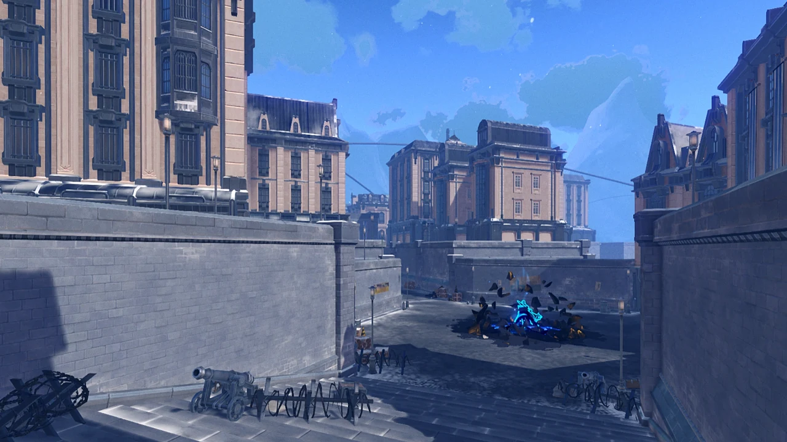
출구는 하층 구역으로 이어진다. 상층과 같은 도시지만 빛의 양이 다르고, 의 열로 겨우 버티는 공간이다. 이곳의 사람들은 수호자의 역사보다 하층의 생활을 먼저 말한다.
하층에서 일행을 맞은 것은 다. 상층의 명령이 닿지 않는 이 구역에서 질서를 대신하는 조직이고, 그들의 간부 와 의사 가 일행의 처지를 정리해 준다.
하층 구역은 사방이 암벽으로 둘러싸여 있어. 딱히 구역이 나눠져 있진 않고 흩어져 있는 광산구역과 마을만 있지. 마치 벨로보그의 교외 같아
하층 구역의 공기는 지오매로우 연기로 흐리고, 사람들은 상층의 소식을 전해 듣는다. 는 지하의 지형이 상층과 어떻게 다른지 곧바로 파악한다.
「뛰어봤자 벼룩」
진료소와 꼬마들
볼더 타운 · 나타샤의 진료소
의 진료소에서 사정이 정리된다. 일행을 기절시킨 것은 삼포의 연막이고, 은 삼포에게 끌려갔으며, 는 거리 구경을 하러 사라졌다. 의 행방도 알 수 없다.
제길! 줄리안의 위장을 알아채다니, 너흰 대체 누구냐!
Mar. 7th를 찾아 나서면 그녀는 꼬마들의 놀이에 섞여 있다. 하층의 아이들은 상층에서 온 사람을 경계하지 않고, 놀이의 규칙을 알려 주는 대신 숨바꼭질을 제안한다. 이라는 아이가 이 무리의 두목이다.
놀이가 끝나면 훅은 빚을 갚듯 단항이 어디 있는지 알려 준다. 파란 머리의 삼촌이 검은 머리 오빠를 격투 클럽으로 데려갔다는 것이 아이가 본 사실이다.
나타샤는 진료소의 물자가 얼마나 남았는지, 하층에 몇 명이 더 들어올 수 있는지를 함께 계산한다. 진료소의 침대 수가 이 구역의 수용 한계다.
검은 머리 오빠를 파란 머리 삼촌이 격투 클럽으로 데려가는 걸 후크가 봤어
제8조, 마지막 규칙
격투 클럽 · 옥타곤하층의 전력이 한자리에 모이는 격투 클럽, 그 규칙의 마지막 조항, 그리고 두 여자가 처음 마주치는 자리.
「숨바꼭질」
낯선 여자
진료소 · 거리
가 눈을 뜬 곳은 진료소 침대다. 포박당한 것이 아니라 눕혀진 것이고, 곁에는 자신을 라고 밝히는 여자가 있다. 그녀는 의 연막과 의 추격, 그리고 하층에 내려온 경위를 차례로 설명한다.
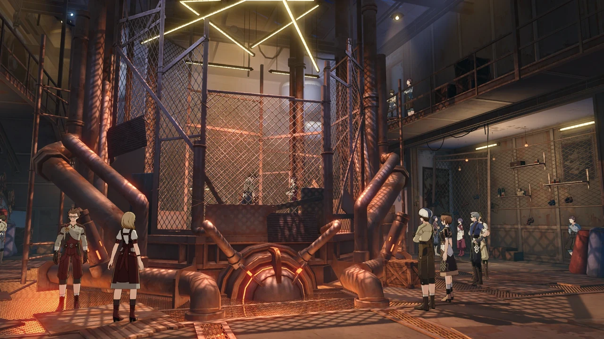
나타샤는 하층의 사정을 숫자로 말한다. 광맥이 발견되면서 광부와 방랑자 사이에 충돌이 생겼고, 그 갈등은 상층이 정한 규칙으로는 풀리지 않는다. 하층 주민에게 철위대는 보호자가 아니라 상층의 손이다.
보다시피 지하의 상황은 정말… 고달프거든. 너희만 괜찮다면, 지하 사람들을 도와줬으면 해
이야기를 마친 나타샤는 일행에게 하층 사람들을 도와달라고 청한다. 대가를 약속하지 않는 부탁이고, 일행이 을 찾는 일과도 겹친다. 이 부탁이 이후 하층에서의 모든 동선을 정한다.
나타샤가 제시한 숫자는 광맥 하나가 하층의 수십 년치 난방을 감당한다는 것이고, 그 광맥을 둘러싼 권리가 상층에 있다는 것이 갈등의 핵심이다.
「제8조, 마지막 규칙」
옥타곤
격투 클럽
격투 클럽의 옥타곤에는 하층의 관중이 모여 있다. 진행을 맡은 Dr. 파고파고가 다음 경기를 알리고, 관중석에서는 함성과 돈이 오간다. 일행이 문을 열자 관중 둘이 난입한 것으로 기록된다.
옥타곤 안에 이 있다. 그는 도망친 것도, 사라진 것도 아니고 싸우고 있다. 일행이 합류해 경기를 정리하고 나면, 그를 이곳까지 끌고 온 사람이 라는 사실이 드러난다.
앗? 이건… 돌발 상황이 발생했습니다. 관중 둘이 옥타곤에 난입했는데! 「차가운 청룡」과 팀을 꾸리려는 것 같죠?
삼포를 잡아 추궁하면 그는 능청스럽게 답한다. 와 연결해 줄 수 있다는 말이 나오고, 단항의 압박이 그 말을 지키게 만든다. 하층에서 의 단서를 쥔 조직은 와일드 파이어뿐이다.
격투 클럽의 규칙은 여덟 조항으로 되어 있고, 마지막 조항은 두목의 판정이 최종이라는 내용이다. 단항이 옥타곤에 선 것도 그 규칙 안에서다.
절대 우습게 보면 안 돼! 「고수는 사람들 사이에 있다」는 말 들어봤지? 「와일드 파이어」에는 고수들이 모여있어. 딱 보면 알 거야
「오래 기다려온 칼끝」
두 여자
옥타곤 밖 · 큰 광산구역 입구
격투 클럽 밖에서 가 악당들에게 포위된다. 구해 준 것은 의 간부 다. 두 사람은 구한 쪽과 구해진 쪽이라는 관계를 잊고 곧바로 서로를 겨누고, 상층과 하층의 문법으로 대화한다.
제레의 목적은 구출이 아니라 면담이다. 와일드 파이어의 두목 가 지상에서 온 귀한 소녀를 만나고 싶어 한다는 것이고, 브로냐는 상층의 입장을 전할 자리를 얻는다. 일행에게는 와일드 파이어와 접선할 기회다.
이동 목적지는 큰 광산구역이다. 그곳에서 광부와 방랑자의 충돌이 벌어지고 있고, 두목도 그 안에 있다. 제레가 앞장서고 브로냐가 뒤따르는 이 배치는 끝까지 유지되지 않는다.
지하 주민으로서 털어놓을 원망이 많겠지. 실버메인 철위대로서 나도 확인하고 싶은 게 많고, 그뿐이야
브로냐는 제레에게 구해진 뒤에도 사과하지 않는다. 대신 두목을 만나겠다는 제안을 받아들이고, 그 선택이 상층의 사령관으로서 처음으로 자기 판단을 쓴 자리가 된다.
큰 광산구역
큰 광산구역갱도에 갇힌 광부들, 봉쇄를 명령한 기계, 그리고 폐광차 너머의 두목.
「심연으로 추락한 자들」
갱도
큰 광산구역 입구 · 갱도
큰 광산구역은 이미 발칵 뒤집혀 있다. 광부와 방랑자가 부딪쳤고, 탈출한 광부들은 두려움에 떨고, 탈출하지 못한 광부들의 생사는 확인되지 않는다. 입구에는 광부들의 가족이 길을 막고 서 있다.
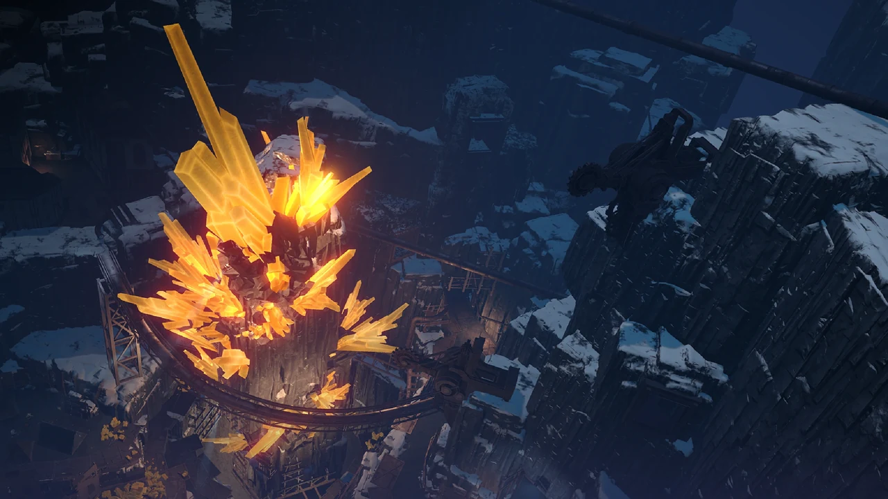
일행은 와 함께 갱도로 들어간다. 길에서 만나는 광부를 구하고, 혼란을 틈타 이득을 보려는 방랑자를 상대하고, 갱도 깊은 곳에서 벌어지는 다툼을 정리한다. 는 경계를 늦추지 않고 를 감시한다.
이 앞이 방랑자의 부락인데 지금은 입구가 봉쇄됐지 뭐야. 아마 화난 광부들의 보복이 두려웠겠지
진행을 막는 것은 폐기된 광차다. 일행은 갱도에 버려진 의 물건 찾기 제품을 발견하고, 그 도움으로 부품을 찾아 광차를 수리한다. 길이 열리면 두목이 있는 아래층으로 내려갈 수 있다.
광부를 구출할 때마다 갱도의 지도가 조금씩 채워진다. 와일드 파이어가 확보한 지도와 광부들이 아는 지도가 다르고, 그 차이가 실종자 위치를 좁힌다.
제1채굴대가 「지오매로우」 광맥을 발견했는데 매장량이 놀라울 정도였어…. 추정컨대 최근 30년간 발견한 것 중에서 가장 큰 광물일걸
「심연으로 추락한 자들」
두목
갱도 아래층
아래층에서 를 만난다. 그는 일행이 광부들을 구한 일을 근거로 의 협력을 약속하고, 진실한 친구를 환영한다는 말로 그 약속을 확인한다. 의 발언에는 원한을 인정하면서도 자리를 그만두는 선에서 멈춘다.
에 대한 정보는 올레그에게도 없다. 대신 그는 현지인도 모르는 비밀을 아는 이름을 하나 떠올린다. 하층의 기계를 관리하는 이고, 그 기계는 도시의 설계도와 오래된 기록을 보관한다.
정말 오랜만에 듣는 말이구먼, 하하, 기억해두지. 「와일드 파이어」는 진실한 친구를 환영한다네
올레그는 일행에게 하층에 머물 거처를 마련해 준다. 상층에서 뒤통수를 맞은 기억이 있는 일행은 그 호의를 그대로 믿지 않지만, 하룻밤을 쉬어야 다음 일을 정할 수 있다.
올레그가 브로냐에게 요구한 것은 사과가 아니라 약속이다. 하층의 광부가 상층의 결정으로 다시 희생되지 않게 하겠다는 말을 들은 뒤에야 그는 자리를 뜬다.
너희가 말한 「스텔라론」은… 들어본 적 없어 모르겠어. 하지만 현지인도 모르는 비밀이라면 생각나는 이름이 있네……
철천지원수? 난 그렇게 생각 안 해. 내 눈엔 이 청년의 말처럼 자신의 「계산」으로 내놓은 엉뚱한 이치만 아는 쌀쌀맞은 기계일 뿐일세
리벳 타운
괴테 그랜드 호텔 · 리벳 타운두목이 마련한 거처, 잠 못 드는 밤의 산책, 그리고 버려진 공업 마을에 남은 의료 물자.
「해질녘의 만남」
호텔의 밤
괴테 그랜드 호텔 · 거리
는 광산구역의 소란이 끝난 뒤 일행에게 거처를 마련해 준다. 이름은 괴테 그랜드 호텔이지만 상층의 같은 이름과는 다른 건물이고, 무장한 병사가 숨을 곳이 없을 만큼 소박하다. 그래도 하층에서 이 정도의 방은 최고의 대접이다.
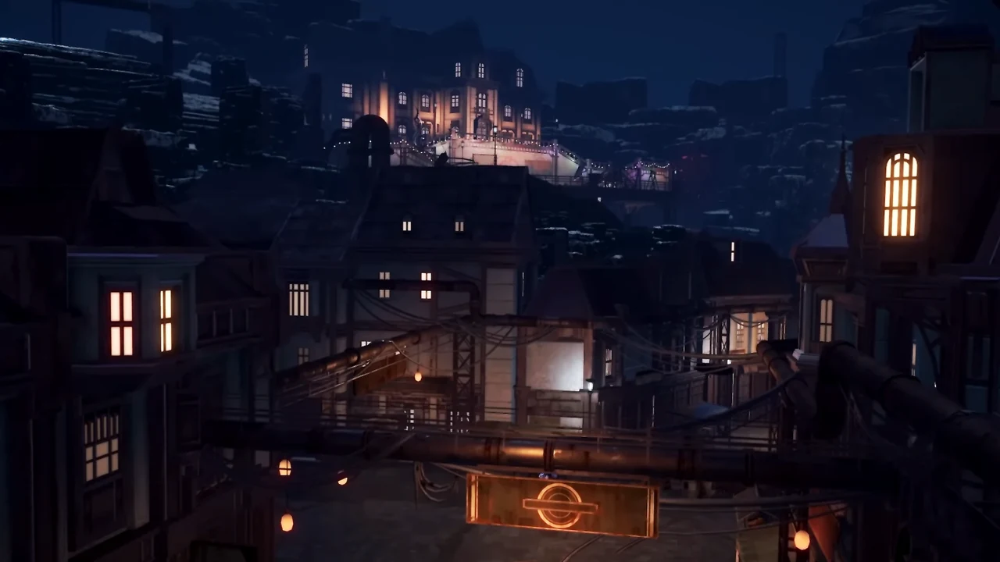
잠이 오지 않는 밤에 일행은 밖으로 나선다. 며칠째 같은 악몽이 이어지고, 문밖에는 같은 이유로 잠들지 못한 가 서 있다. 브로냐는 상층에서 본 것과 하층에서 본 것 사이에서 결론을 내리지 못한 상태다.
그날 밤, 안락한 꿈을 방해하는 군화 소리는 없었지만 꿈속에서 들리는 기이하고 이상한 속삭임에 놀라 깨어나고 만다
산책길에서 와 를 만난다. 나타샤는 폐허가 된 리벳 타운에 의료 물자가 남아 있을 수 있다며 회수를 부탁하고, 제레는 못마땅한 표정으로 그 부탁에 동행한다. 제레에게 이 마을은 어린 시절을 보낸 곳이다.
호텔의 방은 무장병이 숨을 곳이 없을 만큼 단순하다. 가 이 건물을 고른 이유는 편안함이 아니라 경계의 용이함이다.
「눈사태처럼 돌아오는 떠난 이」
버려진 마을
리벳 타운
리벳 타운은 버려진 공업 마을이다. 입구는 조용해 보이지만 몬스터가 도사리고 있고, 길목마다 무너진 설비가 길을 막는다. 일행은 마을을 내려다보며 동선을 정한 뒤 시장 쪽으로 내려간다.
타운 시장의 의료 물자 상자는 이미 털렸다. 범행 수법이 열계 생물의 것과 다르다는 판단에 와 가 현장을 살피고, 물자를 가져간 것이 사람이라는 결론에 이른다. 아직 멀리 가지 않았을 것이므로 추격은 마을 안에서 끝난다.
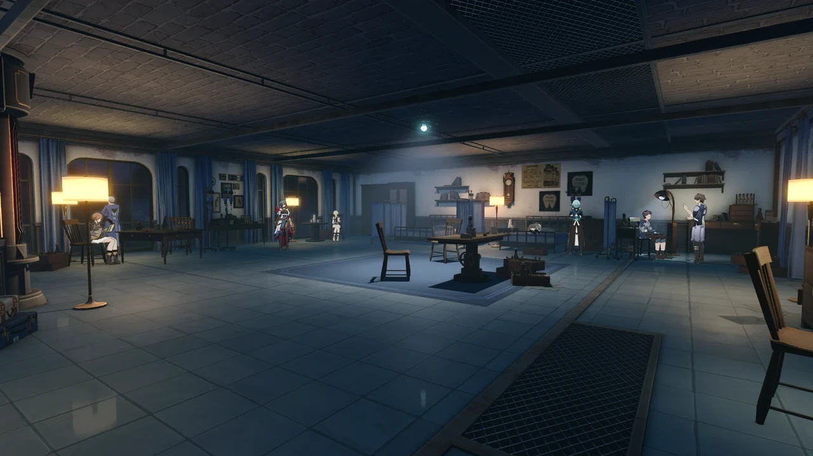
보육원으로 가는 길에 브로냐가 멈춘다. 그녀는 이 마을에서 어린 시절을 보낸 기억이 없지만, 건물을 보는 순간 낯익음을 느낀다. 제레도 같은 자리에서 같은 표정을 짓고, 두 사람은 서로의 어린 시절을 처음으로 나눈다.
저 멀리 언덕 위에 있는 집이 나타샤의 보육원이야
리벳 타운의 시장에는 값이 붙지 않은 물건만 남아 있다. 누가 가져가도 되는 물건과 누가 남긴 물건이 섞여 있고, 그 구분이 마을의 마지막 규칙이다.
나타샤가 저 집은 예전에 어떤 재력가가 기증해준 거라고 했었어. 뭘 하든 좋은 사람인 건 분명하지
「눈사태처럼 돌아오는 떠난 이」
빨간 옷의 소녀
리벳 타운 · 기계 부락
물자를 가져간 것은 마을의 아이 에릭이다. 는 그를 믿지 않지만 는 거래로 물자를 되찾고, 에릭은 그 대가로 보육원에 얽힌 정보를 흘린다. 물자는 절반이 이미 다른 곳으로 나갔다.
나머지 물자를 챙긴 사람은 다. 빨간 옷을 입은 소녀이고, 로봇 하나와 함께 위험한 마을을 돌아다닌다. 그녀가 물자를 가져간 이유는 방랑자를 치료하기 위해서다.
이걸 찾았어, 받아 봐
클라라의 뒤에는 가 있다. 하층의 로봇을 이끄는 그가 구역을 봉쇄한 이유도, 광부와 방랑자의 충돌이 커진 이유도 클라라가 설명한다. 진료소의 물자 문제와 구역 봉쇄는 같은 사건의 두 얼굴이다.
클라라는 물자의 절반을 방랑자에게 나눠 주고 나머지를 스바로그에게 보여 준다. 그녀가 두 진영 사이에서 하는 일은 중개에 가깝다.
그리고 아마 클라라도 있기 때문일걸?——그 빨간 옷의 소녀 말이야. 걘 스바로그와 친해서 항상 그 뒤를 따라다니거든
스바로그의 문
진료소 · 리벳 타운 · 로봇 부락진통제를 반으로 나누는 결정, 세 개의 인증, 그리고 기계가 처음으로 말하는 진실.
「쇳물에 눕힌 몸」
반쪽 진통제
진료소 · 리벳 타운
일행은 상의 끝에 진통제의 절반을 에게 나눠 주기로 한다. 진료소의 물자가 줄어드는 결정이지만, 방랑자를 치료하지 않으면 광부와의 충돌이 다시 커진다. 는 이 결정을 나무라지 않는다.
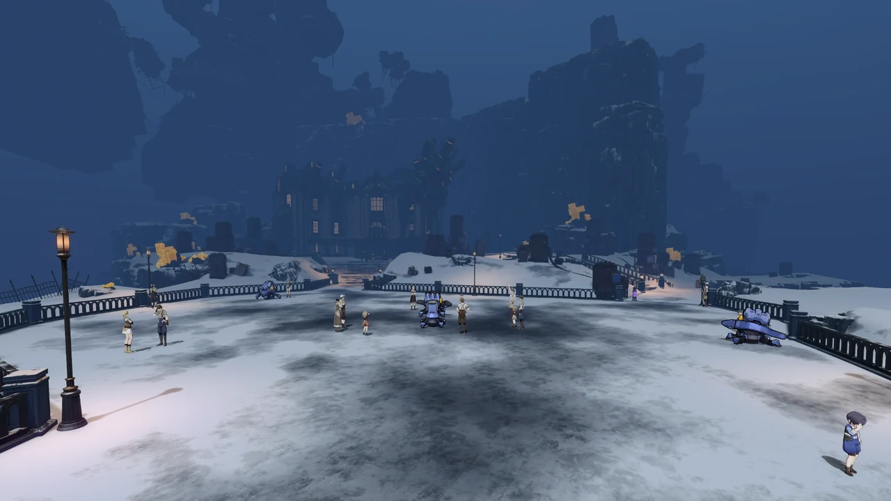
나타샤는 일행이 없는 사이 동료들이 각자 맡은 일을 해냈다고 알린다. 와 은 의 두목과 함께 있고, 하층의 조직은 처음으로 상층의 손님과 같은 전선에 선다.
가 보낸 안내인은 다. 와 평화롭게 교섭하고, 결렬되면 와일드 파이어가 전투를 준비한다는 것이 이번 작전의 두 갈래다. 안내인이 누구인지에 대한 불만은 작전을 바꾸지 못한다.
하하하, 정말 미안하네. 나타샤는 항상 조심스럽거든, 하지만 절대 나쁜 의도는 없었다는 점 너희도 알 거라고 생각해
진통제를 반으로 나누는 결정에는 진료소의 남은 재고가 근거로 붙는다. 나타샤는 그 계산을 말하지 않고, 대신 다음 물자 조달 일정을 묻는다.
「부패 또는 연소」
세 개의 인증
기계 부락 외곽 · 스바로그의 기지
의 기지로 가는 문은 인증 로봇을 통과해야 열린다. 는 문 앞에서야 그 조건을 말하고, 일행은 1급과 2급, 3급 인증을 차례로 모은다. 인증을 다 모아도 문이 하나 더 나오는 구조에 일행의 인내가 시험된다.
두 번째 문의 권한은 에게 있다. 그녀가 리벳 타운에 갇혔다는 소식을 듣고 일행은 공방으로 향하고, 생물을 정리해 그녀를 지킨다. 설득은 한 번 결렬된다. 클라라는 자신을 지켜 준 사람들에게도 스바로그를 넘기지 않는다.
부락의 에너지 공급 시스템이 다시 연결됐더군. 고맙다, 클라라
결렬 뒤에 남은 것은 논리다. 열차 팀은 자신들이 스바로그의 계산에 없던 값, 곧 「변수」라는 점을 근거로 제시한다. 클라라는 그 말을 받아들여 기지의 문을 열고, 일행은 에너지 공급 장치를 고쳐 준다.
클라라가 추천했으니 너희에게 발언의 기회를 주겠다
인증 로봇은 등급별로 다른 질문을 던지고, 그 질문에 답하는 방식이 곧 기지의 보안 규칙이다. 삼포는 그 규칙을 알고 있으면서도 순서를 지키지 않는다.
가치 없는 변명이군. 너흰 지하에서 온 것이 아니니 하층 구역의 인류를 대표할 권리가 없다
「부패 또는 연소」
역사의 진실
스바로그의 기지 내부
는 일행을 변수로 인정하고 데이터베이스의 빗장을 푼다. 그가 전하는 것은 행성의 역사다. 이 모든 재난의 근원이고, 역대 수호자는 그 사실을 알고도 시민에게 알리지 않았다.
너흰 세상 깊은 곳의 비밀을 건드리고 있어. 인류는 몰라도 되는 비밀이다
기록에는 그 판단의 과정이 남아 있다. 진실을 알리면 도시가 무너지고, 알리지 않으면 찰나의 평화가 이어진다. 수호자들은 후자를 택했고, 하층 구역은 그 선택의 비용을 오래 치렀다.
일행은 이 진실을 갖고 에게 돌아간다. 가 어떻게 움직일지, 상층과 어떻게 맞설지가 남은 문제다. 스텔라론을 없애지 않으면 행성도 열차도 궤도를 되찾지 못한다는 결론만은 분명하다.
스바로그가 공개한 기록에는 수호자가 연구진의 보고를 받는 장면이 남아 있다. 진실을 알릴 것인지 묻는 질문에 수호자가 답하지 않는 침묵까지 기록되어 있다.
네, 준비 됐어요…. 어머니
익숙지 않은 작별
기계공방 · 철위대 금지구역 · 극한의 땅행성의 진실을 안 뒤에도 남은 일은 성문을 지나는 일이고, 성문 너머에는 수호자가 있다.
「익숙지 않은 작별」
기계공방
벨로보그 상층 · 기계공방
상층으로 돌아온 일행을 철위대가 귀환 행렬로 맞는다. 형식은 예우지만 목적은 체포이고, 일행은 의 판단에 따라 의 기계공방으로 몸을 숨긴다. 서벌은 랜도 가문의 장녀이고, 도시의 기계를 다루는 사람이다.
밖에 눈보라가 저렇게 몰아치는 데 제대로 된 난방이 없었더라면 벨로보그 상하층은 오래전에 죽은 도시가 됐을걸
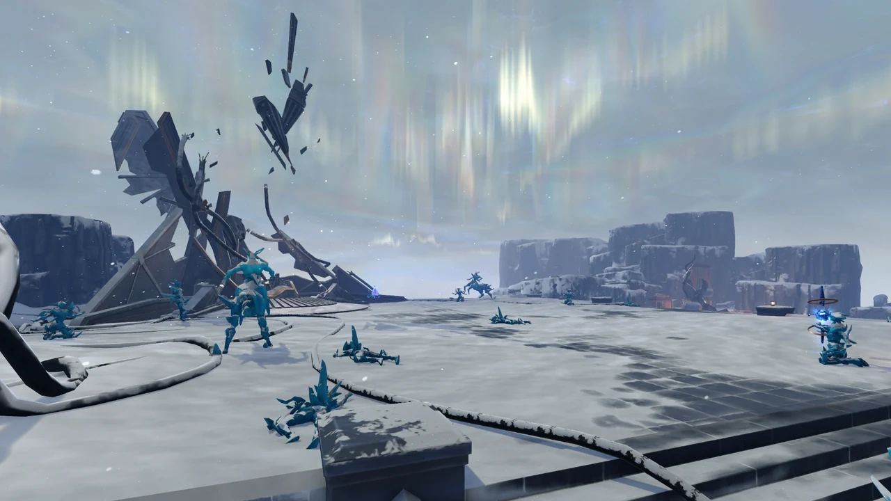
서벌은 곧 일행의 편에 선다. 그녀가 제공하는 것은 정보와 신분이다. 철위대가 가장 많이 모인 곳은 금지구역이고, 그 문을 통과하려면 랜도 가문의 이름이 필요하다.
금지구역 잠입은 서벌의 신분으로 이루어진다. 문지기는 그녀를 보는 순간 적의를 거두고, 일행은 금지구역 안에서 잔교를 움직일 단말과 에너지 중추를 찾는다. 길을 여는 데 필요한 것은 기술과 시간이다.
서벌의 기계공방은 도시에서 가장 오래된 작업장 중 하나다. 난방기와 계산기를 같은 책상에서 고치고, 철위대의 무기도 이곳에서 수리된다.
「익숙지 않은 작별」
극한의 땅
철위대 금지구역 · 잔향의 회랑
잔교가 놓이고 일행은 전선에 도착한다. 철위대와 가 맞부딪치는 자리에서 가 길을 열고, 일행은 잔향의 회랑으로 들어간다. 회랑은 열계가 현실의 풍경을 베껴 만든 공간이고, 수호자 모녀의 잔영이 앞서 지나간 흔적이 남아 있다.
회랑의 깊은 곳에서 와 를 만난다. 쿠쿠리아는 의 목소리를 들으며 도시를 지켜 왔다고 말하고, 브로냐는 그 거짓말의 비용을 물은 뒤 어머니의 편에 서지 않는다. 두 사람의 대화는 전투로 끝난다. 도시의 안과 밖을 잇는 의 자리도 이때 정해진다.
도대체 뭘 숨기시는 건지 어머니께서 본 것을 알려주세요…. 왜 철위대를 열계로 보내 죽음으로 내몰고, 왜 하층 구역 사람들을 내버려 두셨고——왜 갑자기 마음을 바꾸신 거죠?
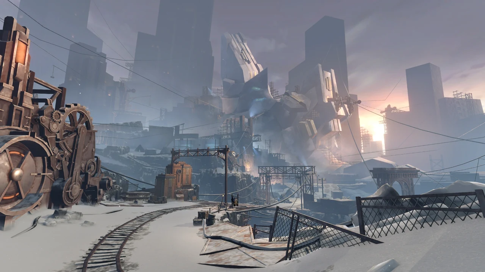
전투에서 쿠쿠리아의 창이 의 몸을 꿰뚫고, 개척자는 앰버색 공간에서 다시 깨어난다. 그 공간에서 개척자는 「보존」의 시선을 받는다. 쿠쿠리아가 쓰러지면서 스텔라론의 영향도 함께 걷힌다.
잔향의 회랑은 열계가 현실의 풍경을 베낀 공간이다. 같은 거리가 반복되고 문의 위치가 조금씩 달라서, 지도가 아니라 기억으로만 통과할 수 있다.
이 죽음에 직면한 세계가… 네게 그 목소릴 들려줄 거다
——그들은 오물이 아니에요!
「익숙지 않은 작별」
새 수호자
벨로보그 · 은하열차
사건이 끝나면 가 남는다. 그녀는 어머니의 최후를 있는 그대로 알리지 않고 선의의 거짓말로 감싼다. 도시의 질서를 다시 세우는 데 필요한 것이 진실이 아니라 시간이라는 판단이다.
브로냐한테 무슨 일이 생긴다면… 직접 구해주겠다고 약속했어
일행은 승전보를 전하고 브로냐의 취임을 확인한 뒤 열차로 돌아간다. 이 사라지면서 궤도의 정체도 풀리고, 열차는 다음 목적지를 정할 수 있게 된다. 하층과 상층의 물자 교류도 이때 다시 열린다.
작별은 짧다. 브로냐는 수호자로, 는 하층의 사람으로 남고, 일행은 열차에 오른다. 스텔라론 하나가 사라진 행성이 다음 역의 좌표를 열었다.
브로냐의 취임은 철위대의 선서와 시민의 방청으로 이루어진다. 수호자의 자리는 혈통이 아니라 의 추대로 이어지고, 그 추대를 받아들이는 사람이 새 수호자가 된다.
개척 후문 「겨울꿈에서 깨어난 순간」
벨로보그 · 박물관 · 큰 광산구역 · 클리포트 보루
태양의 축제
벨로보그 상층 · 역사문화박물관수호자가 된 브로냐의 초대, 사양하는 승객 하나, 그리고 700년 된 빚을 들고 온 사절.
「미래 시장」
축제의 초대
은하열차 · 벨로보그
가 태양의 축제에 일행을 초대한다. 얼어 있던 도시가 처음으로 스스로 연 축제이고, 새 수호자의 취임을 시민에게 알리는 자리이기도 하다. 와 는 응하고, 은 열차에 남겠다고 한다. 히메코도 항법사 일로 빠진다.
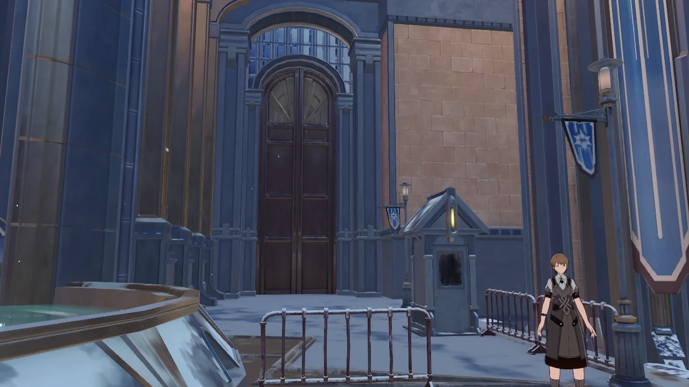
설원에서 제복의 사람과 마주친다. 다. 그녀가 가져온 것은 축하 인사가 아니라 700년 전 컴퍼니가 에 투자한 자금의 회수 요구이고, 채무의 상환 기한은 280년이다.
괜찮아, 난 열차에 남을게
브로냐는 사절을 도시 안으로 들인다. 축제의 손님과 채권자가 같은 사람이 된 셈이고, 도시는 답을 준비할 시간이 없다. 상층의 과 , 하층의 주민이 각자 다른 계산으로 이 문제를 본다.
축제의 이름은 태양의 축제이고, 얼어 있던 도시가 처음으로 스스로 연 축제다. 광장에는 난방기가 임시로 설치되고, 하층에서 온 사람도 같은 자리에 선다.
장기적인 발전 이념이… 시대와 생명까지 넘었군요. 그 랜드라는 분은 참 대단한 지도자였네요
느낌이 심상치 않네. 좋아, 마음의 준비는 됐어
「미래 시장」
박물관의 협상
역사문화박물관
협상은 박물관에서 열린다. 는 도시의 형편과 하층의 처지를 근거로 상환 조건을 늦추자고 하고, 는 계약과 이자, 그리고 컴퍼니의 절차를 근거로 원금과 기한을 지키라고 요구한다. 두 사람의 논리는 같은 역사에서 나왔지만 결론이 반대다.
토파즈의 요구는 현금만이 아니다. 채무를 정리하지 못할 경우 도시의 자산과 운영권을 컴퍼니가 맡는 합병이 조건으로 붙고, 이 조건은 시민에게 곧바로 알려진다. 축제 분위기는 하루 만에 흔들린다.
경고하는데 얼른 여기서 나가! 다시는 이 근처에 얼굴도 내밀지 말라고! 안 그럼 이 낫으로 무슨 짓을 할지 나도 몰라!
일행은 도시 안에서 여론을 확인한다. 상층의 관료는 계약을, 하층의 주민은 생존을 먼저 본다. 협상은 결렬되고, 남은 선택지는 광산구역에서 벌어지는 충돌을 수습하는 일뿐이다.
박물관의 전시실에는 700년 전의 기록과 투자 문서가 함께 있다. 브로냐가 협상 자리를 이곳에 차린 이유는 문서의 출처를 직접 보여 주기 위해서다.
창조의 엔진
큰 광산구역 · 클리포트 보루컴퍼니의 요원과 하층 주민이 부딪치는 광산, 그리고 도시가 스스로 밝히는 설계도.
「미래 시장」
광산의 충돌
큰 광산구역
광산구역에서 컴퍼니의 요원과 하층 주민이 부딪친다. 요원들은 채무의 담보를 확인하러 왔고, 주민들은 광맥과 일자리를 빼앗길 수 없다고 맞선다. 충돌은 곧 물리적인 싸움으로 번진다.
가 이 국면에 개입한다. 그는 하층의 기계와 기록을 관리하는 존재이고, 도시가 세워질 때의 설계도까지 보관하고 있다. 컴퍼니의 요구가 어디까지 정당한지를 판단할 근거도 그 기록 안에 있다.
왔구나, 외부인. 시스템 기능 모두 정상, 컴퍼니의 사절과 갈등은 없었다
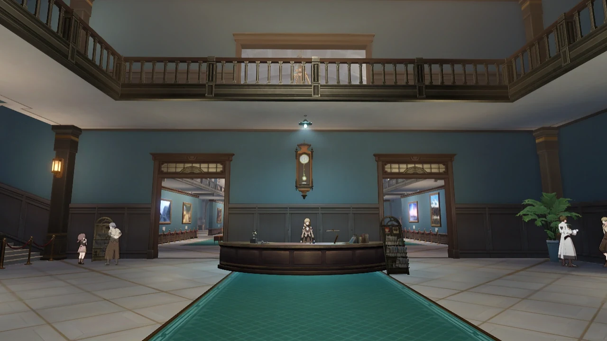
는 협상의 근거를 바꾼다. 도시의 자산 중에는 지질 개조 프로젝트의 잔해가 있고, 그 잔해의 정체가 채무의 성격을 바꾼다. 는 계약서와 현장의 기록을 대조한다.
컴퍼니의 요원은 담보 목록과 광산의 채굴 기록을 대조한다. 요원들이 요구한 것은 현금이 아니라 광맥의 운영권이고, 그 요구가 주민의 반발을 키운다.
「미래 시장」
창조의 엔진
클리포트 보루
가 내세운 것은 「창조의 엔진」이다. 도시의 지하에 묻힌 그 장치는 원래 지질을 개조해 사람이 살 수 있는 땅을 만드는 프로젝트의 단위였고, 컴퍼니가 투자한 자금의 성격도 그 사업의 몫이었다. 즉 채무는 도시를 삼킬 권리가 아니라 사업의 잔여분을 정산할 권리다.
좋아요! 그렇다면 문제없을 것 같아요. 이제 보고 절차와 추후 책임은……
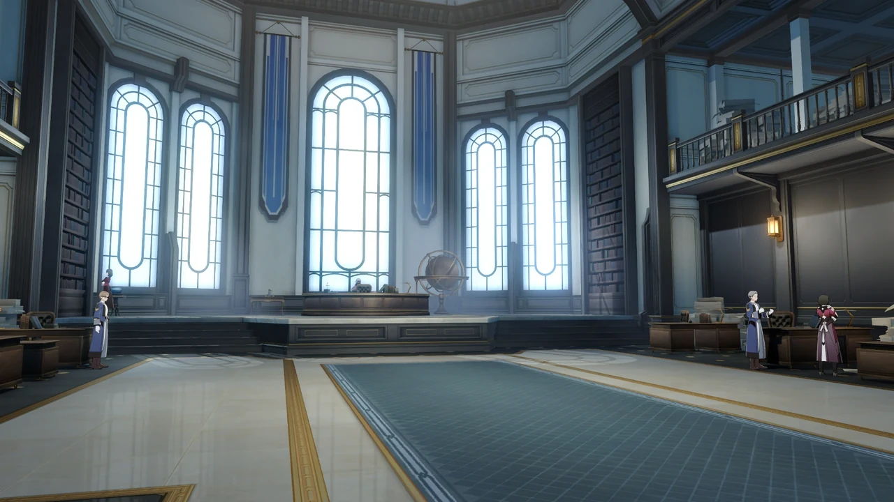
는 기록을 확인하고 합병을 철회한다. 계약을 지키지 않은 대가로 그녀는 컴퍼니 안에서 강등 처분을 받는다. 그럼에도 그녀는 절차를 어기지 않았고, 그 사실이 도시와 컴퍼니 사이의 다음 거래를 가능하게 한다.
마지막으로 어벤츄린이 에게 말을 건다. 페나코니와 관련된 사업의 협력을 제안하는 자리이고, 이 제안은 후에 다른 행성에서 다시 등장한다. 열차는 를 떠나 다음 역으로 향한다.
창조의 엔진은 지질을 개조해 사람이 살 수 있는 땅을 만드는 장치다. 도시의 지하에 묻힌 이 장치가 채무의 성격을 바꾸고, 토파즈의 판단도 그 기록 위에서 뒤집힌다.
이건 내가 할 일이 아니야. 브로냐가 어떤 선택을 하든 난 전부 따를 거야…. 브로냐를 대신해서 선택하는 건 난 못해